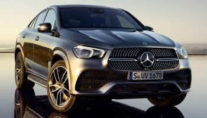
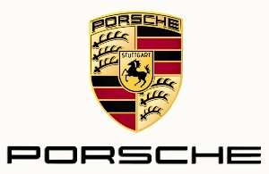

NAJNOWSZE WIADOMOSCI

MERCEDES POKAZAL NOWY MODEL 
Firma Mercedes-Benz niedawno zaprezentowała nowy model SUVA klasy wyższej, Mercedesla GLE. Sammochód reprezentuje nowy język stylistyczny marki. Blisko pięcometrowy SUV będzie konkurował z takimi silnymi graczami segmentu jak Bmw X5, Audi Q7, Volvo XC90 czy Lexus RX. Nowy Mercedes będzie wyposażony w takie nownki technologiczne jak interaktywna nawigacja cz asystent samochodowy, z którym kierowca będzie mógł rozmawiać oraz wydawać komendy. Ponad dwu tonowego SUVa będą napędzać jednostki o mocy od 245 koni mechanicznyh do blisko 600 koni w topowej odmianie AMG.
OFENSYWA MODELOWA CADILLACA
Cadillac to amerykański producent samochodów premium, który od wielu lat borykał się z problemami związanymi z niską sprzedażą. Aby rozwiązać ten problem, kierownictwo Cadillaca postawiło na odświeżenie gamy modelowej całej marki. W przeciągu najbliższych 5 lat firma planuje wprowadzić aż 5 nowych SUVów oraz 4 nowe sedany. Design nowych modeli nie będzie rewolucyjny lecz pewną ewolucją dotychczasowego wyglądu. Wszystkie pojazdy będą wyposażone w najnowższe systemy bezpieczeństwa, asysteny jazdy oraz technologię pozwalającą na pół-autonomiczną jazdę na amerykańskich autostradach. Pierwszym modelem będącym urzeczywistnieniem tego planu będzie cadillac CT5. Sportowo-luksusowy sedan, który za cenę BMW serii 3 ma konkurować z modelem z wyższej klasy, czyli BMW serii 5. Więcejs szczegółów już w krótce.
FIAT OSKRAŻONY O OSZUSTWO
FIAT, czyli włoski producet samochodów znalazł się w centrum międzynarodowego skandalu. Niemiecki urząd do spraw kontroli bezpieczeństwa wdrożył nowatorską metodę sprawdzania czy dany model samochodu spełnia międzynarodowe standardy dotyczące bezpieczeństwa. Otóż owa nowa metoda wykazała, że najnowsze przewody paliwowe w samochodach tej marki są wykonane z makaronu typu spaghetti. Niebezpieczeństwo wystąpienia nieszczelności przewodów może mieć miejsce już po 5 latach od wyprodukowania samochodu z danym typem przewodów. Otóż makaron parcieje, gdy samochód będzie jeździł na paliwie pochodzenia rosyjskiego, a nie tak jak zaleca producent, pochodzenia amerykańskiego. Fiat odpiera zarzuty słowami ,, Ci Niemcy nigdy nie mogą pojąć, że coś może być zrobione tanio i dobrze - powiedział szef Fiata Mario Luigi". To nie pierwszy raz, kiedy Fiat jest atakowany. W latach osiemdziesiątych wyszło na jaw, że zamiast koła dojazdowego w samochodzie, była czerstwa pizza. Konsekwencją takiego rozwiązania było nałożenie obowiązku na FIATa, aby wymienił wszystkie pizze na takie, które spełniają normy nośności, czyli na pizze na grubym spodzie. Jak widdać Fiat zawsze potrafił poradzić sobie z przeciwnościami losu. Czas pokaże jak skończy się najnowszy skandal nazwany przez dziennikarzy ,,el pasta del benzina".
HISTORIA PORSCHE 
25 kwietnia 1931 roku Ferdinand Porsche założył firmę początkowo konstruującą samochody, a następnie z nakazu Adolfa Hitlera pojazdy wojskowe i pancerne dla III Rzeszy w czasie II wojny światowej konkurując z firmą Henschel. Logo firmy Porsche, w kształcie herbu, które pozostało niezmienione do czasów współczesnych, w centralnej części ma umieszczonego biegnącego konia, który został zapożyczony z herbu miasta Stuttgart, w którym mieści się przedsiębiorstwo. W 1947 roku przedsiębiorstwo przejął syn Ferdinanda – Ferry Porsche. Pierwszy model Porsche 356 z roku 1948 zawierał wiele części z Volkswagena Garbusa, w tym silnik (chłodzony powietrzem 4-cylindrowy boxer) oraz amortyzatory. Autorem projektu nadwozia był Erwin Komenda, który już poprzednio zaprojektował wygląd VW Garbusa. Model 356 w toku produkcji był modernizowany, wiele części Volkswagena zastąpiono własnymi konstrukcjami. Ostatnie wersje modelu 356 miały silnik własnej konstrukcji firmy Porsche. W 1963 roku zaprezentowano model Porsche 911. Był to wóz sportowy z sześciocylindrowym silnikiem własnej konstrukcji umieszczonym z tyłu. To auto stało się światowym przebojem firmy Porsche, osiągając sukcesy nie tylko na torze wyścigowym, lecz przede wszystkim w sprzedaży. W połowie lat 70 XX wieku powstała koncepcja stworzenia podziału na małe modele czterocylindrowe, średnie sześciocylindrowe i duże z silnikiem o ośmiu cylindrach. Mały model 924 pojawił się w 1976 roku a rok później duży 928. Polityka ta była kontynuowana aż do roku 1995, kiedy to po trzech latach zakończono produkcję Porsche 968 m.in. ze względu na niewielki popyt. Samochód poza stylistyką przypominającą Porsche 944 krytykowano za małą liczbę cylindrów.